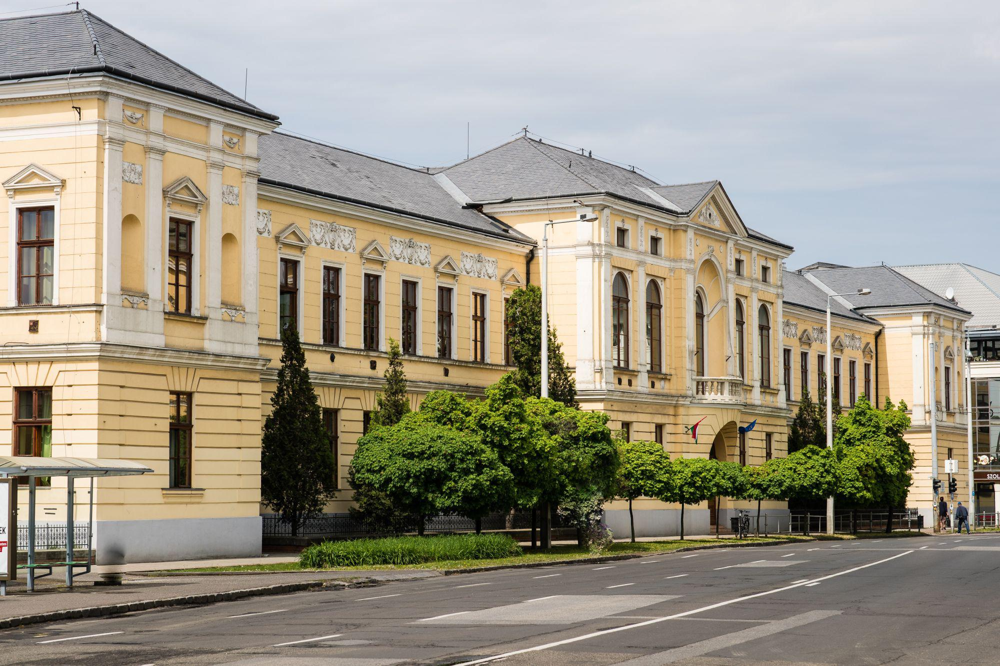
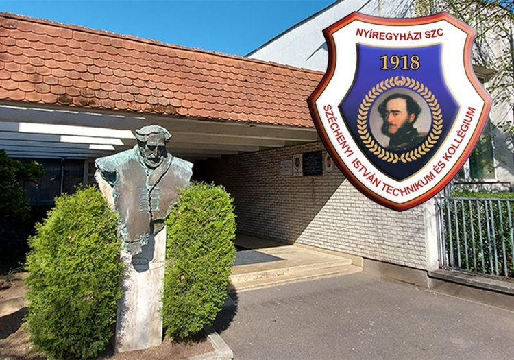

<div class="container">
  <div class="row iskolaim">
    <div class="col-md-1"></div>
    <div class="col-md-5">
      <div class="card" style="width:400px">
        
        <div class="card-body">
          <h4 class="card-title">Túróczy Zoltán Evangélikus Óvoda és Magyar-Angol Kéttanítási Nyelvű Általános Iskola</h4>
          <p class="card-text">2016-ban léptem be először az általános iskolába, ahol nemcsak az alapvető ismereteket sajátítottam el, hanem itt alakult ki a hangosítás és a robotika iránti érdeklődésem is. A szeretetteljes pedagógusok és a támogató közösség megalapozták későbbi fejlődésemet, és sok értékes emlékkel ballagtam el 2024-ben.</p>
          <a href="turoczy.html" class="btn btn-primary menulink">Olvass tovább</a>
        </div>
      </div>
    </div>
    <br>
    <div class="col-md-5">
      <div class="card" style="width:400px">
        
        <div class="card-body">
          <h4 class="card-title">Nyíregyházi SZC Széchenyi István Technikum és Kollégium</h4>
          <p class="card-text">Szoftverfejlesztő és tesztelő szakon tanulok. Ebben az iskolában is van lehetőségem tovább folytatni eddig elkezdett hobbijaimat, pályafutásomat a robotika és hangtechnika vizein.</p>
          <a href="szikszi.html" class="btn btn-primary menulink">Olvass tovább</a>
        </div>
      </div>
    </div>
  </div>
</div>